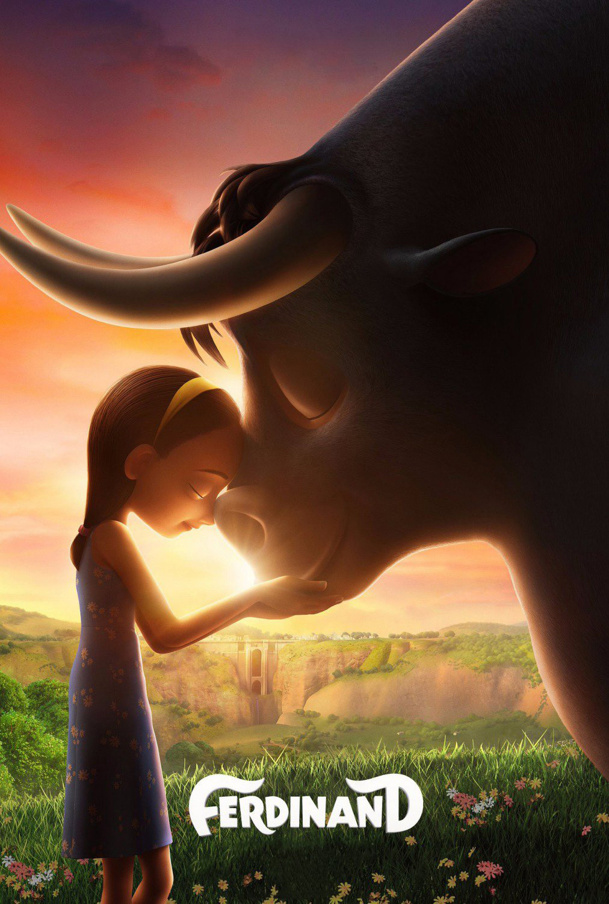

Ferdinand
Anno di uscita: 2017

Film d'avventura commedia-drammatico americano, basato sul libro La storia del toro Ferdinando di Munro Leaf del 1936.
Trama:
Ferdinand, un piccolo toro, preferisce starsene tranquillo sotto una quercia da sughero ad annusare i fiori piuttosto che saltare, sbuffare e dare testate agli altri tori. Crescendo, Ferdinand diventa grande e forte, ma il suo carattere rimane mite. Un giorno, però, cinque uomini si presentano per scegliere il "toro più grande, più veloce e più irruento" per le corride di Madrid, e Ferdinand viene scelto per errore.
Regia:
Carlos Saldanha
Studio di animazione:
Blue Sky Studios
Candidato all'Oscar nel
2018